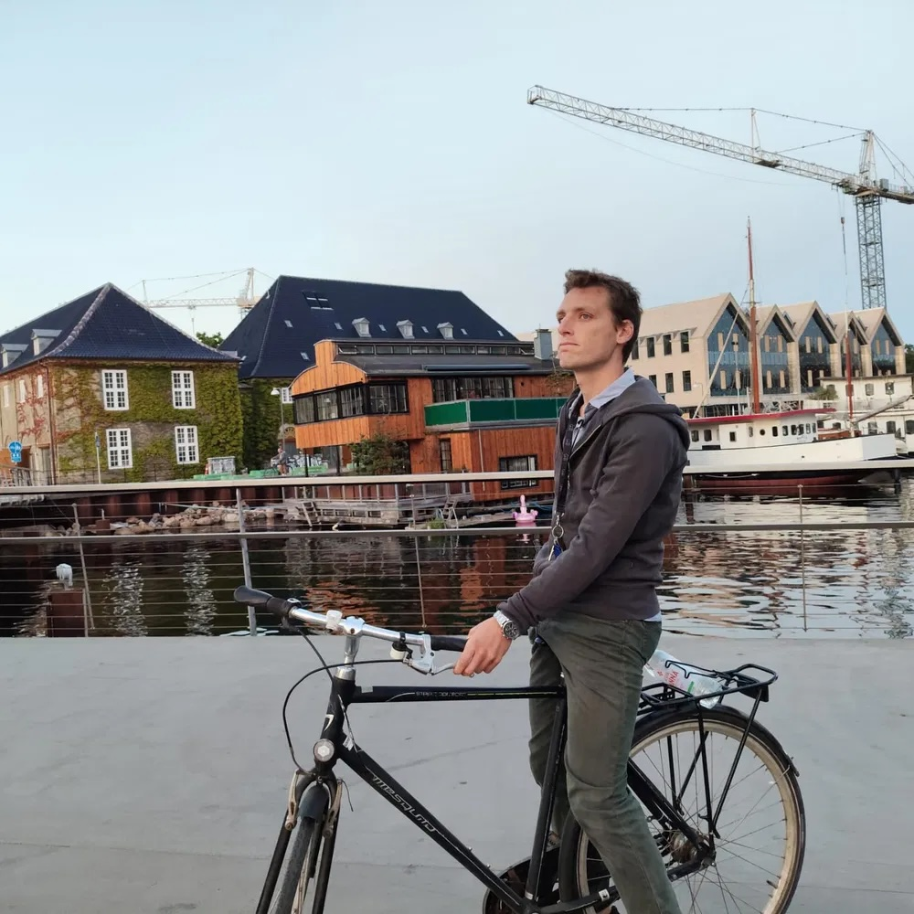
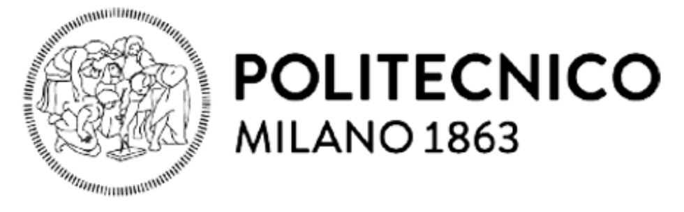
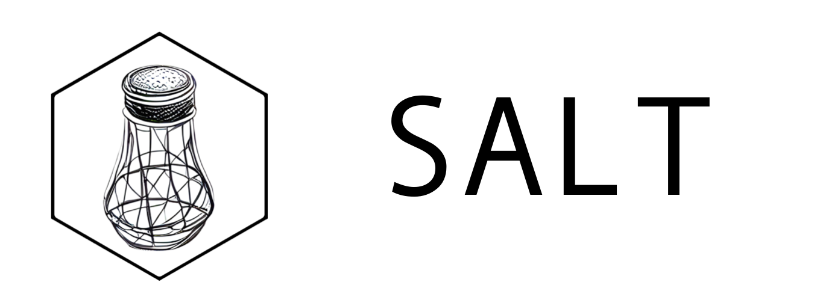

2026 — present
Postdoctoral researcher
Politecnico di Milano · Milan, Italy
Research at the intersection of computational social science, data science, and complex systems.Last update of the website: 13 November 2026

Hello! I am Jacopo (yah-ko-po, he/him).
I am a postdoctoral researcher at Politecnico di Milano.
My research interests sit somewhere between computational social science, agent-based models, and dynamics in social media. I use empirical data and mechanistic models to understand human behaviour: how opinions change, (mis)information travels, and collective patterns emerge. In short, I like to study people. And models. And data.
I completed my PhD at Sapienza University, supervised by Fabrizio Silvestri, while working at CENTAI under the supervision of Gianmarco De Francisci Morales. There, I worked across industrial and academic projects. Currently, I work at Politecnico di Milano in the group of Francesco Pierri.
2026 — present
Politecnico di Milano · Milan, Italy
Research at the intersection of computational social science, data science, and complex systems.2026 — present
ISI Foundation · Turin, Italy
Ongoing collaboration in network science, social networks, and computational social science.2026 — present
Intesa Sanpaolo · Turin, Italy
Innovation Strategy at Innovation & Business Support Reengineering.2022 — 2025
CENTAI · Turin, Italy
Industrial and academic research on agent-based modelling, causal inference, and social systems.2022 — 2026
Sapienza University of Rome · Excellent cum laude
Thesis: Mechanisms Beyond Synthetic Worlds: Foundations of Empirical Agent-Based Models.2021 — 2022
ISI Foundation · Turin, Italy
Lagrange Scholarship in Data Science and Social Impact.Publications
2026
Lenti, J.; Costantini, L.; Fosch, A.; Pangallo, M.
Proceedings of AAMAS ’262026
Borile, C.; Lenti, J.; Monti, C.; Ghidini, V.; De Francisci Morales, G.
Royal Society Open Science2026
Lenti, J.; Silvestri, F.; De Francisci Morales, G.
IEEE Transactions on Computational Social Systems2025
Lenti, J.; Silvestri, F.; De Francisci Morales, G.
ICWSM ’25 · 2622–26272025
Lenti, J.; Monti, C.; Aiello, L.; De Francisci Morales, G.
The ACM Web Conference ’25 · 590–6002024
Lenti, J.; Monti, C.; De Francisci Morales, G.
WSDM ’24 · 350–3592024
Paoletti, G.; Dell’Amico, L.; Kalimeri, K.; Lenti, J.; Mejova, Y.; Paolotti, D.; Starnini, M.; Tizzani, M.
Scientific Reports2023
Lenti, J.; Mejova, Y.; Kalimeri, K.; Panisson, A.; Paolotti, D.; Tizzani, M.; Starnini, M.
JMIR Infodemiology2022
Lenti, J.; Ruffo, G.
Journal of Complex Networks2021
Lenti, J.; Gil-Alana, L. A.
International Journal of ClimatologyUnder review
Monaco, G.; Lenti, J.; Pierri, F.
Under review
Lenti, J.; De Francisci Morales, G.
Physics ReportsPeople I have had the pleasure to work with.
When I step away from the data…
Exploring trails and mountain landscapes.
→ Gruppo Giovani CAI LanzoRunning, swimming, cycling, skiing, anything…
→ ZetaZero Running Club CirièListening closely, taking risks, and building stories together.
→ Quinta TintaResearch journey




© 2026 Jacopo Lenti · Torino, Italy